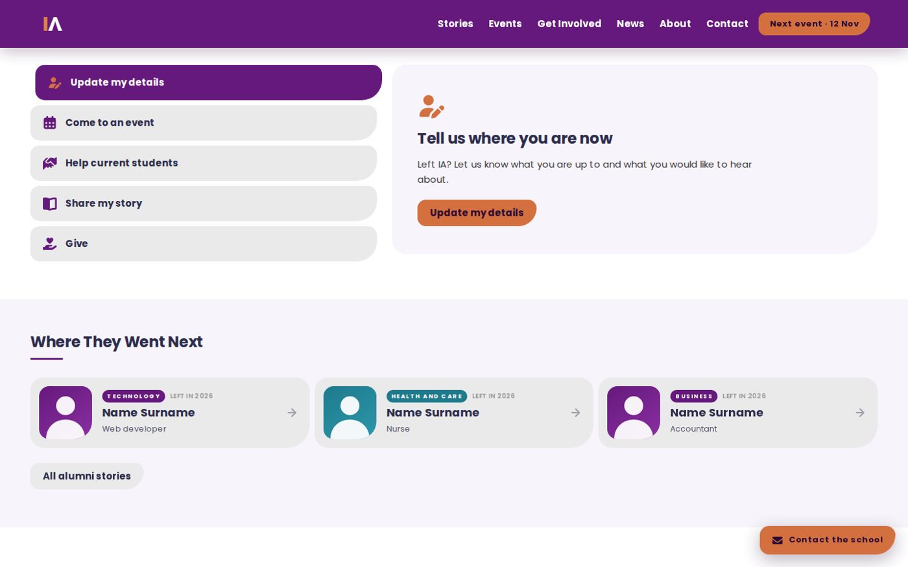
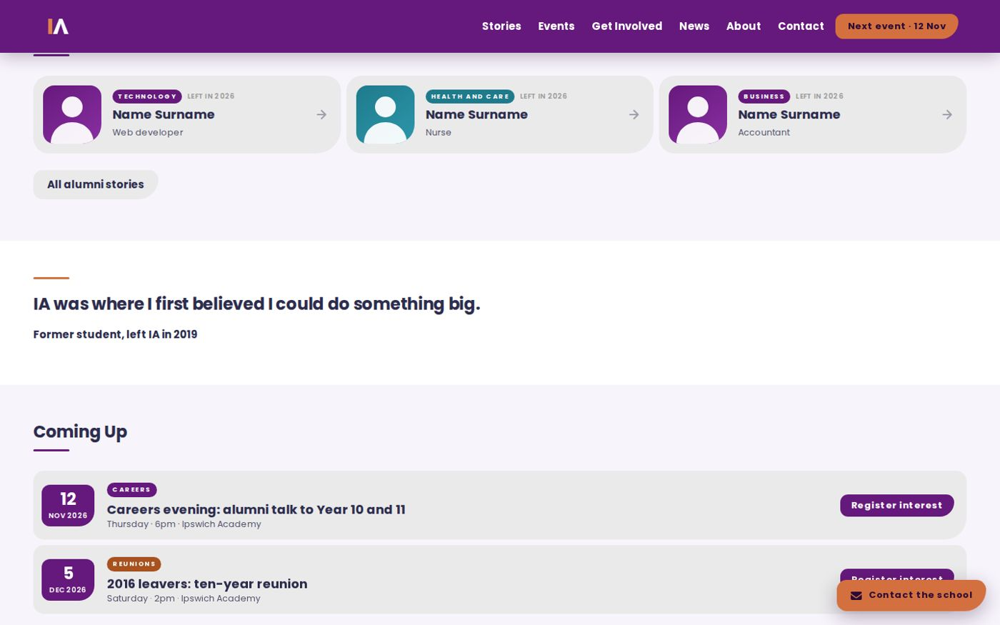
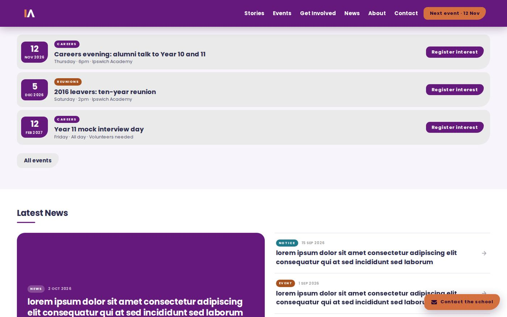
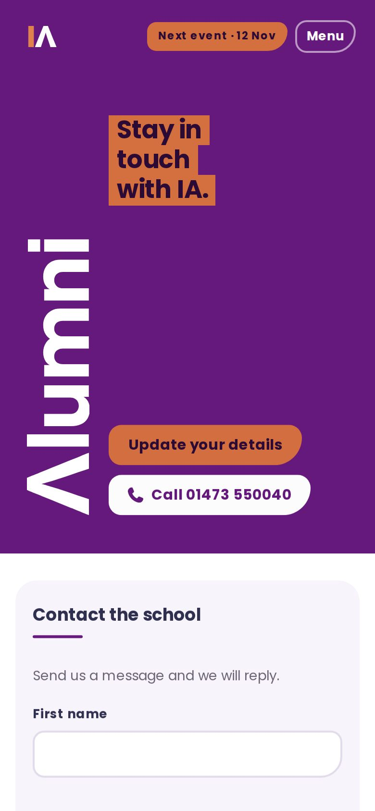

Five things to do
Update your details, come to an event, help current students, share your story, or give. Each one is a card with a button, so nobody has to hunt.
A new site for Ipswich Academy
A website for keeping former students in touch.

I wanted to give former students a reason to come back: somewhere to say where they ended up, hear about events, and find ways to help the students coming up behind them.
Update your details, come to an event, help current students, share your story, or give. Each one is a card with a button, so nobody has to hunt.
Stories from former students about what they did after school, to show current students what’s possible.
Events with a button to register your interest, like a careers evening, a ten-year reunion and a mock interview day.
Mentor a Year 10 or 11 student, speak at a careers evening, or offer work experience.



A huge sideways wordmark and a splash of orange on deep purple. It looks like the school, but it feels like somewhere you’d want to belong.
A small “next event” pill stays in the menu, so there’s always a reason to take a look.
Four files, about 140KB in total. Quick on any connection and simple to hand over.
The big wordmark turns on its side and the menu folds into one button, so it still feels bold on a small screen.
Visit the live site